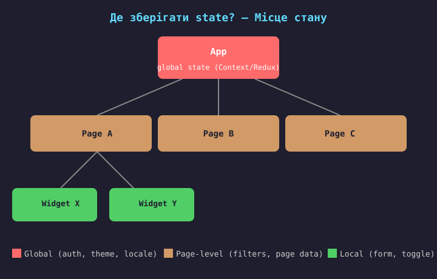
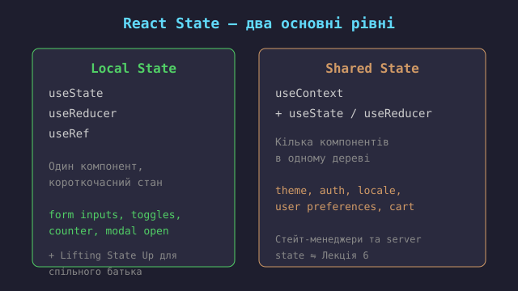
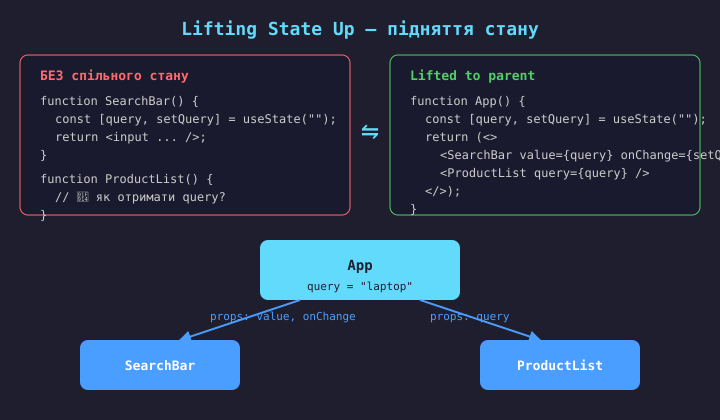
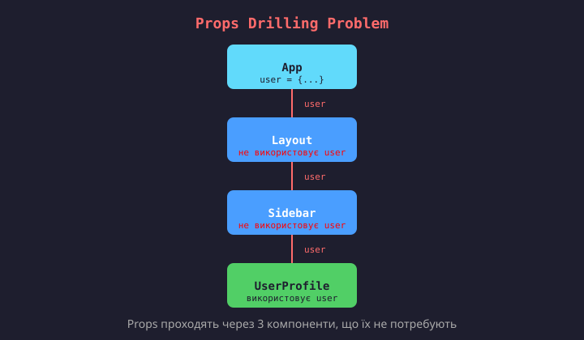
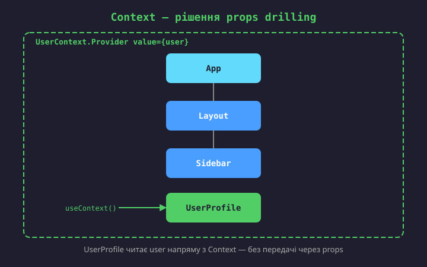
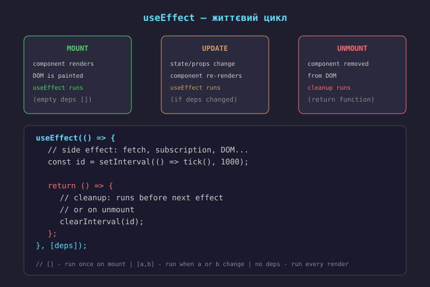
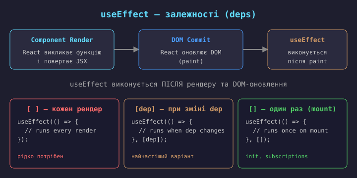

Правило: стан має жити як можна нижче в дереві компонентів. Піднімаймо його вгору лише тоді, коли цього потребують кілька компонентів.
useState у цьому компоненті.useContext або зовнішній стейт-менеджер
(Zustand, Redux).
import { useState } from "react";
function TodoForm() {
const [text, setText] = useState("");
const [isOpen, setIsOpen] = useState(false);
return (
<form onSubmit={(e) => {
e.preventDefault();
addTodo(text);
setText("");
}}>
<input value={text}
onChange={(e) => setText(e.target.value)} />
</form>
);
}
useState коли:
Приклади:
// useState — простий стан
function Counter() {
const [count, setCount] = useState(0);
const reset = () => setCount(0);
const inc = () => setCount(c => c + 1);
const dec = () => setCount(c => c - 1);
}
// useReducer — складний стан
function reducer(state, action) {
switch(action.type) {
case "inc": return {count: state.count+1};
case "dec": return {count: state.count-1};
case "reset": return {count: 0};
}}
useState коли:
toggle, input value, counter
useReducer коли:
forms, multi-step wizards, cart
// 1. Reducer function (pure)
type State = { count: number; step: number };
type Action =
| { type: "inc" }
| { type: "dec" }
| { type: "setStep"; step: number }
| { type: "reset" };
function reducer(state: State, action: Action) {
switch (action.type) {
case "inc": return { ...state, count: state.count + state.step };
case "dec": return { ...state, count: state.count - state.step };
case "setStep": return { ...state, step: action.step };
case "reset": return { count: 0, step: 1 };
}
}
// 2. Використання в компоненті
function Counter() {
const [state, dispatch] =
useReducer(reducer,
{ count: 0, step: 1 });
return (
<div>
<p>{state.count} (step: {state.step})</p>
<button
onClick={() => dispatch({ type: "inc" })}>+</button>
<button
onClick={() => dispatch({ type: "dec" })}>-</button>
<button
onClick={() => dispatch({ type: "reset" })}>Reset</button>
</div>
);
}
Переваги: логіка винесена з компонента, редюсер — чиста функція (легко тестувати), actions типізовані.
state.x = 5 ✗.
Завжди створюй новий об'єкт: setState({...state, x: 5}) ✓.setState. Для логіки, що залежить від
попереднього значення, використовуй функціональну форму:
setCount(prev => prev + 1).// Погано — дубльований state
function ProductList(props) {
const [items, setItems] = useState([]);
const [visibleCount, setVisibleCount] = useState(0);
useEffect(() => {
setVisibleCount(items.filter(i => i.active).length);
}, [items]);
}
// Добре — обчислення під час рендеру
function ProductList(props) {
const [items, setItems] = useState([]);
const visibleItems = items.filter(
i => i.active
);
// або useMemo для дорогих обчислень
const sorted = useMemo(
() => [...items].sort(...), [items]
);
}
Якщо значення можна отримати з існуючого state/props — обчислюй його
під час рендеру. useMemo — лише для дорогих обчислень.

Якщо два дочірніх компоненти потребують одні й ті ж дані → стан піднімається до їх спільного батька.
Алгоритм:
useState.Це основний механізм React для спільного стану.
Аналог у Vue — provide/inject або спільний reactive-об'єкт.

Props drilling — коли дані передаються через кілька рівнів компонентів, які їх не використовують, лише щоб доставити їх глибше.
Рішення: Context API, композиція компонентів, стейт-менеджери (Zustand, Redux), або винесення логіки в Custom Hooks.

// 1. Створити Context
import { createContext, useContext, useState, type ReactNode } from "react";
type User = { name: string; role: string };
const UserContext = createContext<User | null>(null);
// 2. Provider — обгортає дерево і дає значення
function App() {
const [user, setUser] = useState<User>({ name: "Anna", role: "admin" });
return (
<UserContext.Provider value={user}>
<Layout />
</UserContext.Provider>
);
}
// 3. Consumer — читає значення в будь-якому місці всередині Provider
function UserProfile() {
const user = useContext(UserContext);
if (!user) return <p>Not logged in</p>;
return <p>Hello, {user.name} ({user.role})</p>;
}
Аналог у Vue — provide / inject. Context ідеальний для
глобальних даних, які рідко змінюються (theme, locale, auth).
Проблема: коли значення Context змінюється — всі компоненти,
що викликають useContext, перерендеряться, навіть якщо їм
потрібна лише частина значення.
Рішення:
value={useMemo(...)};Context — не заміна для всього стану. Використовуй для статичних/рідкісних даних (auth, theme, config).
// Замість props drilling — передаємо готовий елемент через children/props
function App() {
const [user, setUser] = useState({ name: "Anna" });
return (
<Layout
sidebar={<UserProfile user={user} />} // відразу передаємо
header={<Header user={user} />}
/>
);
}
function Layout(props: { sidebar: ReactNode; header: ReactNode }) {
return (
<div>
{props.header}
<main>{props.children}</main>
{props.sidebar}
</div>
);
// Layout не знає про user взагалі!
}
Патерн «composition» — передавати готові елементи, а не сирі дані.
Layout залишається агностичним до user. Аналог у Vue — <slot>.
Context + useReducer — вбудований інструмент React для спільного стану. Підходить для низькочастотних даних (theme, auth, locale).
Коли Context стає вузьким місцем (часті оновлення, складні залежності, серверний стан) — використовують зовнішні стейт-менеджери:
Детально ці інструменти розглянемо в Лекції 6: State Management та Production React.
Правило: починай з useState + Lifting State Up.
Додавай Context коли props drilling стає проблемою.
Стейт-менеджери — лише коли Context вже не справляється.
Чиста функція — функція, яка для однакових вхідних даних завжди повертає однаковий результат, без побічних ефектів.
Компоненти React мають бути чистими функціями від props та state:
UI = f(props, state).
Side effect (побічний ефект) — будь-що, що виходить за межі чистої функції:
React дає useEffect для ізоляції side effects від фази рендеру.


// 1. Fetch data on mount
useEffect(() => {
let cancelled = false;
fetch("/api/user")
.then(r => r.json())
.then(data => {
if (!cancelled) setUser(data);
});
return () => { cancelled = true; };
}, []);
// 2. Subscribe to event
useEffect(() => {
const handler = () => setWidth(window.innerWidth);
window.addEventListener("resize", handler);
return () => window.removeEventListener("resize", handler);
}, []);
// 3. React to prop/state change
useEffect(() => {
document.title = `User: ${user.name}`;
}, [user.name]); // тільки при зміні name
// 4. Timer with cleanup
useEffect(() => {
const id = setInterval(() => {
setTime(new Date());
}, 1000);
return () => clearInterval(id);
}, []);
// 5. Fetch when query changes
useEffect(() => {
fetchResults(query).then(setResults);
}, [query]); // dep!
// 1. Безкінечний цикл
useEffect(() => {
setCount(count + 1);
}); // без deps!
// setCount → re-render → effect → setCount...
// 3. Немає cleanup
useEffect(() => {
window.addEventListener("resize", handler);
// forgot removeEventListener
}, []);
// memory leak при unmount
// 2. Пропущений dep
useEffect(() => {
fetch(`/api?q=${query}`);
}, []); // query ✕
// stale closure — query залишиться старим
// 4. Effect для обчислень
useEffect(() => {
setFiltered(items.filter(...));
}, [items]);
// краще: const filtered = useMemo(...)
// Обчислення з props/state
useEffect(() => {
setFiltered(items.filter(i => i.active));
}, [items]);
// const filtered = useMemo(() => ..., [items]);
// Синхронізація props → state
useEffect(() => {
setValue(props.initialValue);
}, [props.initialValue]);
// Render with key={initialValue} or use state during render
// Реакція на user event
useEffect(() => {
if (submitted) submitForm(data);
}, [submitted]);
// const handleSubmit = () => submitForm(data);
useEffect потрібен для:
useEffect
useLayoutEffect
Правило: завжди починай з useEffect. Переходь на
useLayoutEffect лише якщо бачиш візуальне мигання
(flicker) при оновленні DOM.
// БЕЗ Custom Hook (дублікація)
function SearchA() {
const [q, setQ] = useState("");
useEffect(() => { setTimeout... });
// debounce logic duplicated...
}
// та ж логіка в SearchB, SearchC...
// З Custom Hook (1 місце)
function useDebounce(value, delay) {
const [d, setD] = useState(value);
useEffect(() => { ... }, [value]);
return d;
}
// використовується скрізь
Використання:
function SearchBar() {
const debouncedQuery = useDebounce(query, 300);
// debounce logic is reusable
return <input value={query} onChange={...} />;
}
Custom Hook — це JavaScript-функція, ім'я якої починається з use,
і яка може викликати інші Hook-и.
Конвенції:
use (useFetch, useToggle, useLocalStorage);useState, useEffect, інші hooks;Аналог у Vue — Composables (useMousePosition, useFetch).
// hooks/useToggle.ts
import { useState, useCallback } from "react";
export function useToggle(initial: boolean = false) {
const [value, setValue] = useState(initial);
const toggle = useCallback(() => {
setValue(prev => !prev);
}, []);
const setTrue = useCallback(() => setValue(true), []);
const setFalse = useCallback(() => setValue(false), []);
return { value, toggle, setTrue, setFalse };
}
// Використання
import { useToggle } from "./hooks/useToggle";
function Modal() {
const { value: isOpen,
toggle,
setFalse: close } =
useToggle(false);
return (
<>
<button onClick={toggle}>
Open
</button>
{isOpen && <Dialog onClose={close} />}
</>
);
}
// hooks/useDebounce.ts
import { useState, useEffect } from "react";
export function useDebounce<T>(
value: T,
delay: number
): T {
const [debounced, setDebounced] =
useState<T>(value);
useEffect(() => {
const timer = setTimeout(() => {
setDebounced(value);
}, delay);
// cleanup: скидає таймер
// при кожній зміні value
return () => clearTimeout(timer);
}, [value, delay]);
return debounced;
}
// Використання: пошук з дебаунсом
function SearchInput() {
const [query, setQuery] =
useState("");
const debouncedQuery =
useDebounce(query, 300);
useEffect(() => {
if (debouncedQuery) {
console.log("Search: ", debouncedQuery);
// тут буде API-виклик
// (детально — Лекція 3)
}
}, [debouncedQuery]);
return (
<input
value={query}
onChange={(e) =>
setQuery(e.target.value)}
placeholder="Search..."
/>
);
}
useDebounce — класичний Custom Hook: state + effect + cleanup.
Значення оновлюється лише після delay мс тиші.
Cleanup скидає таймер при кожній зміні value.
import { useState, useEffect } from "react";
export function useLocalStorage<T>(
key: string,
initial: T
) {
const [value, setValue] = useState<T>(() => {
const stored = localStorage.getItem(key);
return stored ? JSON.parse(stored) : initial;
});
useEffect(() => {
localStorage.setItem(key, JSON.stringify(value));
}, [key, value]);
return [value, setValue] as const;
}
// Використання
function Settings() {
const [theme, setTheme] =
useLocalStorage("theme", "light");
const [lang, setLang] =
useLocalStorage("lang", "uk");
return (
<div>
<select value={theme}
onChange={(e) =>
setTheme(e.target.value)}>
<option>light</option>
<option>dark</option>
</select>
</div>
);
}
| Hook | Призначення |
|---|---|
useToggle |
Бінарний стан (open/closed, on/off) |
useFetch |
Завантаження даних з API (loading, error, data) |
useLocalStorage |
Стан, синхронізований з localStorage |
useDebounce |
Дебаунс значення (пошук, input) |
useWindowSize |
Розмір вікна (resize listener) |
usePrevious |
Попереднє значення prop/state |
useMediaQuery |
Реакція на CSS media query |
useClickOutside |
Клік поза елементом (modals, dropdowns) |
Готові бібліотеки: react-hooks.org, usehooks.com, react-use.
src/ ├── components/ # UI │ ├── Button.tsx │ ├── Modal.tsx │ └── index.ts ├── features/ # за доменами │ ├── auth/ │ │ ├── LoginForm.tsx │ │ ├── useAuth.ts │ │ └── authApi.ts │ └── products/ │ ├── ProductList.tsx │ └── useProducts.ts ├── hooks/ # спільні hooks │ ├── useFetch.ts │ └── useToggle.ts ├── context/ # Context providers │ └── ThemeContext.tsx ├── utils/ ├── types/ ├── App.tsx └── main.tsx
За типовими принципами:
Кожна feature містить свої компоненти, hooks, API-виклики — feature-first структура.